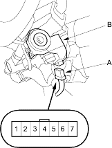

Note these items before troubleshooting:
- Due to the action of the Immobiliser system, the engine takes slightly more time to start than on a vehicle without an Immobiliser system.
- When the system is normal and the proper key is inserted, the indicator light comes on for 2 seconds, then it will go off.
- If the indicator starts to blink after 2 seconds, or if the engine does not start, repeat the starting procedure.
- If the engine still does not start, continue with this procedure.
- Turn the ignition switch ON (II) with proper key.
- Check to see if the Immobiliser indicator light comes on.
Does the indicator light blink?
YES – Go to step 3.
NO – Check for these problems. 
- Blown No. 9 (10A) fuse in the under-hood fuse/relay box.
- An open in the wire between the gauge assembly and the Immobiliser control unit-receiver.
- A faulty immobiliser indicator light.
- An open in the wire between the gauge assembly and the under-hood fuse/relay box.
- Remove the dashboard lower cover.
- Remove the steering column lower covers (see page 17-9).
- Disconnect the 7P connector from the Immobiliser control unit-receiver.

- Check for voltage between the Immobiliser control unit-receiver 7P connector No. 7 terminal and body ground.
Is there battery voltage?
YES – Go to step 7.
NO – Repair open in the WHT/RED wire.
- Check for voltage between the Immobiliser control unit-receiver 7P connector No. 6 terminal and body ground.
Is there battery voltage?
YES – Go to step 8.
NO – Check for these problems:
- Blown No. 6 (15A) fuse in the under-hood fuse/relay box.
- Faulty PGM-FI main relay 1.
- An open in the YEL/BLK wire.